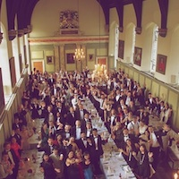
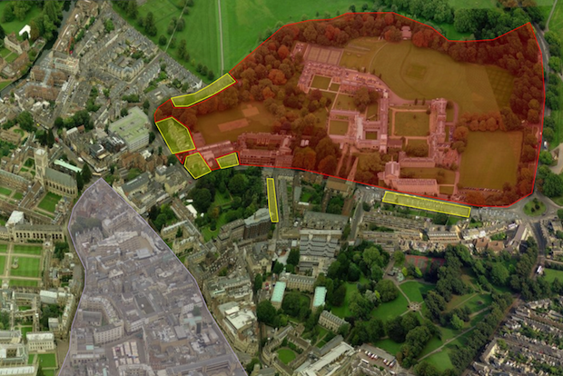

A little information on who we are, and why we're here.
The community
The MCR (Middle Combination Room) is the graduate community within Jesus College. The aim of the MCR Committee is to represent the opinions and needs of graduate students to the College fellowship and the University, to maintain links with the Graduate Union and other MCRs, to facilitate the interaction of graduates with fellows, and perhaps most importantly to offer a wide range of social and academic opportunities targeted specifically towards the graduate community. The Committee also offers an initial point of contact if you have social or welfare issues and if we cannot help you directly we will refer you to the people who can!
The grad room
Within the College grounds is the MCR room. As well as being the room where your pigeonhole is (and therefore where your mail is delivered) we hope you will use this space regularly throughout your time at Jesus. The MCR room has a widescreen TV (with Freeview), a DVD player, an Xbox Kinect, a sound system, sofas and, perhaps most importantly, a coffee machine. We also have a selection of newspapers, magazines, fiction books from the library, board games, and a croquet set for your use.
Getting information
For more information about the MCR, College, and the city of Cambridge, please take a look at the MCR Wiki page (link opens a new tab/page). This resource is curated by not just the committee, but any student in the graduate community. We hope that it will be able to answer many of the questions you might have regarding your arrival and study in Cambridge. If you have any questions, please do email someone on the MCR Committee!.
You can add the MCR calendar to the one on your phone or laptop/computer by clicking here
(A pop up will open on your device asking if you want to subscribe. This subscription works on Mac and PC).
Freshers' fortnight
New graduate students at Jesus College enjoy a fortnight of freshers’ events (existing graduate students are most welcome to take part and make the new students feel welcome). .
Applying to Cambridge
graduate.study.cam.ac.uk
Graduates apply to the university, rather than Jesus College. While filling out your application, you'll have the option of specifying Jesus as your college
Getting into Jesus
If accepted into Cambridge
Our 'grad mum' Sheena will be in touch if you are accepted into Jesus MCR. Sheena will send you information on housing, and point you towards resources (like our wiki) you need.
Arriving in Cambridge
When to arrive
Our MCR has an action packed fortnight of events, so we encourage people to arrive a week before term starts. Check out our documents area below for annotated maps of Jesus College and Cambridge.

Freshers' fortnight
Meet the MCR
From historical tours, to cocktail nights and punting, there are events everyone. Your freshers pack will have the latest timetable, but the documents section has examples of previous timetables to peruse.
See
you
soon!
Your MCR committee
Feel free to get in contact with us about anything!
Rebecca Forster
MCR President (mcr-president)
Chris de Saxe
Vice-president
Christine van Hooft
Secretary
Marcus Webb
Treasurer
Chris Brown
Social officer (mcr-social)
John Lees
Social officer (mcr-social)
Kate Crowcroft
Women's welfare
Junhao Zhang
Men's welfare
C.J. Rauch
LGBT+ Welfare
Pu Liu
International officer
Jeremy Minton
Academic officer
Yee-Chien Chang Webb
Green officer
Jan Beitner
College council
Alex Evans
Sports officer
James Black
MCR webmaster
You can always email either individual committee members, or use the form below to contact the secretary.
There is a wide range of help and support services available to all students at the University.
The links on the right provide further information related to a variety of welfare issues, including details of people and services you can contact.
If you have any comments on these resources, or feel that we have missed something, please contact the Welfare Officers below. The members of the MCR Welfare team (welfare officers, international officer and LGBT liaison) can be contacted by email, pigeonhole, or in person. Their details can be found on the committee page.
Our MCR wiki has more information on where you can find help.
g
The Graduate Union and the Cambridge University Students’ Union also provide Welfare advice:
Jesus College has a wide range of accommodation available to grads. In fact,
we are lucky enough to be one of the few colleges that can offer the financial
and social benefits of living in college for up to three years of a PhD.
Accommodation at Jesus is priced at a very good rate by Cambridge standards
and well maintained, not to mention the fact that most of our graduates live
within 5 minutes walk of both the City Centre and our Grad Room is a great
boost to fostering a sense of community.
Your room in first year will be assigned, but in later years grads are able to
choose their accommodation based on personal preferences. Each grad has up to
three years eligibility for graduate accommodation (including your Masters year),
but more can be offered if rooms are available.
All rooms and partner accommodation have internet connections (included in rents
charged is unlimited wireless internet, via Edurom in all college housing, and
50GB per month of incredibly fast wired internet). Utilities are charged in
addition to the rent at a very competitive fixed rate. The Housekeeping
Department regularly cleans the communal spaces in each house (kitchens,
bathrooms and hallways), grads clean their own rooms and do their own
washing-up and cleaning of cooking utensils. In addition, all accommodation
has laundry facilities within each building, or less than a minutes walk away.
While the college provides beds and standard furniture like desks and chairs,
it does not supply bedding or cooking equipment.
Jesus Lane, Malcolm Street, Park Street and Lower Park Street are the roads that
border the college. The majority of the buildings on these streets are owned by
Jesus College. While some blocks are undergraduate only (including all the housing within
the college gates), the grad housing can be broadly broken down into the
seven areas described below.

Jesus Lane
Jesus Lane is the road that the main entrance to Jesus College (called the ‘Chimney’) comes off.
One side of the street is college housing; the other side is the College itself. The grad accommodation
is clustered at either end of this road, with undergraduates in-between. The houses here tend to be two
to three storeys, with large fenced gardens behind, and kitchens in the basement. A notable house on this street
is number 49. It houses a large number of graduates and has a very large kitchen ideal for socialising.
Little Trinity (16 Jesus Lane)
This grand old house sits at the end of Jesus Lane, directly opposite the ADC Theatre.
Built in 1725, it has a great wooden staircase and several rooms still contain their wooden
panelling and almost every room comes with its own quirky character. Despite its grandiose
design, and the often strong community in the house, the building has small kitchens which
can limit the social atmosphere. The Annexe, a graduate couples unit, is also at this address.
Park St
Park Street has central Cambridge on one side, and the college grounds on the other.
The buildings are similar to, although a little smaller than the ones on Jesus Lane.
As the houses on this street back on to the College’s lacrosse/hockey pitch, residents
there also enjoy being 30 seconds walk from the College gym and squash courts.
Lower Park St
The prettiest housing in college, these two storey houses back on to a college garden on one side,
and either the Maypole Pub, a local school or Jesus Green on the other, depending on
how far down the street you are. The houses here are small, and most have only three
people in each house. Several couples’ units are also on this street.
Marshall Court (off Jesus Lane)
Marshall Court is the newest block in college, with both couples’ flats and single study bedroom.
All rooms in this block have ensuite bathrooms (decked out in Jesus themed tiles!).
Rooms here can be small, but the fittings and views from the rooms down into Sidney Sussex
College Master’s gardens are great. There is also large paved area for storing bikes.
The 20 single bedrooms are spread through four staircases with communal kitchens in the basement.
Maid’s Causeway
The furthest accommodation from Jesus (a full 0.3 miles or all of four minutes gentle stroll!),
a couple of grad houses are located here. While like all areas, the individual room sizes vary,
this street is home to a few truly gargantuan rooms. These buildings are the closest to the
boathouse, as well as the Grafton Centre and the big Tesco and Asda superstores in east Cambridge.
Number 24 also boasts a large kitchen well suited to social dining.
Malcolm St
Malcolm Street has the pleasure of having the college at one end of the street, and a brewery and
bar at the other. The east side of the street is mainly undergraduate, and the west, graduate.
There are also a few couples’ units on this street, with several having access to private gardens.
Book an event/punt
The MCR has a dedicated Ents site
that allows grads to book the punt,
as well as tickets to MCR run events.
Once you arrive at Cambridge you will be given a Raven account, that will give you access.
Gradcon 2014
Talks with video
Sciences
Andrew Singleton - What is the string theory thing anyway?
It is often said that string theory provides our best, and perhaps only, attempt at a
“Theory of Everything”: a single coherent physical idea that could describe, at least
in principle, everything that ever happens in the universe. But what exactly is a “Theory
of Everything”? What is the problem it’s meant to solve? How does string theory do so?
Perhaps most perplexingly, why should anyone believe a theory for which we haven’t a
single shred of experimental evidence, and which doesn’t even look like producing a
testable prediction in the foreseeable future? These are seriously hard questions to
which there are currently no really conclusive answers. I’ll try to illustrate what
we do know, as well as explaining why we don’t know more.
Imme Lammertink - Who’s next? Turn-taking in Dutch and English toddlers
Toddlers learn language in context of conversations. Successful coordination and comprehension
of conversations relies heavily on the ability to anticipate upcoming speaker changes
(turn-transitions). In daily life conversations we use different social and linguistic
cues to anticipate these speaker chances, for example eye movements, gestures, sentence
structure and intonation.
Here, we investigate which linguistic cues Dutch and English toddlers use to anticipate a
turn-transition. In particular, we focus on two linguistic cues: sentence structure and
intonation contour. We manipulate both cues. With respect to sentence structure we
assume that a complete sentence indicates a turn-transition whereas an incomplete
sentence indicates a turn-hold (you expect the speaker to finish the sentence first).
With respect to intonation contour we assume that question intonation (rise in your voice)
indicates a turn-transition, hence you expect a response from the other speaker,
whereas an incomplete intonation contour signals a turn-hold.
We investigate our research question via an eye-tracking experiment in which eye-movements
of participants are followed while they watch videos of two puppets in conversation.
In each conversation, sentences are manipulated for syntactic structure (complete or
incomplete) and intonation (question or not) as mentioned above. These manipulations
result in four different conditions, as I will discuss in the presentation.
Our first results show that Dutch adults rely more on syntactic structure compared to
intonation contour while they anticipate turn-transitions. In contrast, we expect both
Dutch and English toddlers to rely more on intonational contour since children receive
rich intonational input and are very sensitive to intonation from an early age. In the
presentation I will further outline how we investigate our hypothesis and discuss the
first results on Dutch adult data
Lubin Chen - HCN ion channels: critical modulator of pain
The pain pathway is an incredible complicated system and the mechanism of pain is still not
fully understood. Many molecular factors contribute to the pain sensation; but there is
evidence showing that the hyperpolarization-activated cyclic nucleotide- modulated (HCN)
ion channels play a critical role in both inflammatory and neuropathic pain. This
channel functions as a ‘switch’ turning up or down the firing frequency of nociceptors
(neurons that sense pain), which directly correlates to the intensity of pain.
A subpopulation of dorsal root ganglion (DRG) neurons, which expresses a sodium ion
channel Nav1.8, are believed to be nociceptors. The deletion of HCN2 gene in this
particular subpopulation of DRG neurons is sufficient to attenuate both inflammatory
and neuropathic pain in response to thermal or mechanical stimuli. This channel is
therefore a potential target for developing novel analgesics that have completely
distinct working mechanism comparing to the available analgesics such as opioids or
anti-inflammatory drugs and hopefully can meet the currently unfulfilled needs in pain
management.
Arts
Ben Mee - Contribution, musical chairs, and the May Ball market
In some cases, the law allows victims of wrongdoing to recover all of their losses from one,
rather than all, of those responsible for the damage caused. The unlucky wrongdoer may
therefore be required to foot a bill that far exceeds their “fair share”, while other
wrongdoers retain a handsome profit from their unlawful conduct. Contribution law allows
the unlucky wrongdoer to recover some of that “excess” from his or her fellow wrongdoers
in certain circumstances.
This presentation explores topical issues in contribution law, by reference to a
hypothetical conspiracy to fix the price of tickets to the 2015 Cambridge May Balls.
Claire Ratican - Ravens flocking to the reddened sword or sheep in the midst of wolves?
The animal motif is a lasting element in the Anglo-Saxon artistic tradition in England
from the 5th century Migration Period through to the Christian conversion of the
8th century, and beyond. However, representations of animals have varied stylistically
and contextually throughout the Middle Ages. Do these differences point to a fundamental
shift in the manner in which people perceived their relationship with animals and the
world, or do the similarities of content and style speak to an artistic tradition
embodying enduring values and symbols for societies confronting immeasurable political,
economic and social change?
Angela Scarsbrook - Musical performance v. musical analysis?
Most performers and musicologists don’t like each other very much. Performers believe that
music was only intended to be performed and that musicologists drain the fun out of music.
Musicologists believe that there is more hiding behind the musical score that can only
be discovered through analysis and that some performers miss the point.
We are going to understand the debate from both sides by examining excerpts from recent
recordings to see what analytically-informed performances can sound like and how they
might differ from less analytically-informed performances. We will conclude by considering
ways forward for musicology and performance to inform each other more successfully,
leading to better performances and better musicology.
Afra Pujol Campeny - Iberian peninsula’s linguistic puzzle: from the middle ages to the 21st century
The current geo-political linguistic picture of the Iberian Peninsula is the result of more
than a thousand years of language evolution and turbulent history.
The same historical events that shaped its borders in the Early Middle Ages turned it into a
linguistic melting-pot of Romance varieties, Arabic and Indigenous languages. This resulted
into a linguistic situation that saw the birth and death of some languages, as well as entire
linguistic communities arriving and leaving in the blink of an eye, but nevertheless,
leaving a trace in the linguistic history of the peninsula.
We will explore this linguistic puzzle diachronically, to understand how the current
situation came to be.
Other talks
Science
Richard Pates - Fish, and fundamental limits in network performance
The use of high performance cruise control systems allows cars to be driven much closer together in platoons, potential hugely increasing road capacity on motorways.
However as the number of cars in a platoon gets large it begins to exhibit a slinky like behaviour, seriously limiting performance. This phenomena appears to be linked to some fundamental performance limits based on spatial dimension, with similar effects begin observed in flocks of birds and fish. We present some results and thoughts on this topic.
Heba Bevan - Low power wireless sensor network
Subterranean mass-rapid-transport systems use sensors to detect structural changes and communicate data for maintenance modifications. The objective of this research project is to create a new generation of wireless sensor network devices that are small, reliable and very low power consumption. The small size and low power consumption will allow the devices to be deployed in difficult to reach places and areas with limited ambient energy sources, such as bridges and tunnels, respectively.
The devices are power managed by a central processor unit (CPU) programmed to perform tasks that include managing structural sensors, interpreting data, communicating data via a wireless sensor network (WSN) and managing energy consumption. This project will be tested in the London Underground and will serve research institutions and the civil engineering industry.
The outcome of this project will be an array of wireless sensor network devices that gather structural change data caused by events such as leaks, cracks, temperature, pressure and impacts. The system will feed the data through the WSN allowing real time changes and targeted structural maintenance efforts. These devices will not need regular maintenance and battery changes, eliminating a great deal of the human intervention hitherto necessary for wireless devices deployed in hard to reach places like tunnels, railways and the bottoms of bridges.
Yu-Tzu Wu - Time period, birth cohort and prevalence of dementia in mainland China, Hong Kong and Taiwan
Economic development and the change of social environment affect the living conditions of people with substantial influence on health of different generations. In East Asia, dramatic societal changes in the last hundred years could be associated to several risk factors related to dementia, such as extended life expectancy, education opportunities, nutrition, stress and increase of chronic diseases. This study includes the 70 prevalence studies of dementia in mainland China, Hong Kong and Taiwan from 1980 to 2012 and explores the temporal variation of dementia prevalence across different time periods and birth cohorts taking study methods into account. The results indicate no clear variation of dementia prevalence across time periods but a potential increasing pattern from less to more recent birth cohorts. Societal changes might influence early life experiences across different generations with substantial impact on mental health in later life.
Jian Chen - Integration of optics and electronics for future communication technologies.
Communication technologies have a tremendous impact on our daily lives. However the dramatic increase in the need for information is constantly challenging the limits of electronics. Photonics can overcome these bottlenecks of electronics in speed, bandwidth and power consumption; however its advances in performance have not become commoditized and accessible on a larger scale. Therefore, my topic is about photonic integration technology, making photonic products cost-effective and energy-efficient.
Arts
Charlotte Robinson - Modernism and the vernacular city: the work of Fernand Pouillon in Algiers
The city of Algiers underwent a huge social, economic and architectural transition whilst under French colonial rule, and was like many colonial cities, used as testing grounds for new visions of a modern city. Whilst Le Corbusier, the famed pioneer of the modernist movement, proposed the huge radical Plan Obus, which tested the boundaries of modernism, but was notably was never realised, Fernand Pouillon sought to understand the traditional city and form a bridge between vernacular architecture and the rising modern urbanity.
Pouillon was famed for his insightful housing ensembles and ability to create a material continuity between his work and the traditional city. Pouillon’s Diar el Mahçoul, built in 1954, was the first development in Algiers designed for both European and native Algerian occupants. This presentation will explore the way in which Pouillon brought together elements of the traditional Arab Islamic city and modern urbanity, in an attempt to create a new vernacular modern.
Christine van Hoft - Public financial management and public service delivery in Uganda
Uganda has one of the highest rates of population growth in the world, and is also one of the youngest: half the population of Uganda is aged below 15 years. This fast population growth has placed pressure on public services such as schools and healthcare centres, as managers of these facilities face dividing their already thin resources over an ever- growing number of recipients. The provision of public services is also made more complex by the system of public financial management, through which the government converts commitments made in the annual Budget to the delivery of services ‘on the ground’.
In Uganda, as in many developing countries, the governance structure is based on a decentralised model: the central government in the capital city, and a number of district governments with headquarters spread across the country. It is these district governments that are responsible for providing public services including schools, healthcare clinics, roads, water and sanitation. This means that if the process for transferring funding from the central government to the district governments is flawed, the delivery of public services will be negatively affected. My research addresses the extent to which the public financial management system in Uganda supports the delivery of good-quality public services.
Amy Fand-Yen Hsieh - How do we process complex sentences?
Various theories have been proposed to explain how people process complex sentences such as relative clauses (RC, e.g. the girl [who I like]). In the literature, it has been consistently reported that processing subject-extracted RC (e.g. the girl [who _ likes me]) is easier than processing object-extracted RC (e.g. the girl [who I like_]) in languages such as English, German and Dutch. However, in Chinese, the modified noun appears at the end of RC (RC + noun, vs. noun + RC in English) and the theories make different predictions in RC processing difficulty in Chinese. In this talk, I will provide empirical evidence to address this issue and make a simple comparison between processing RC in English and in Chinese.
Keynote
Rory Cellan-jones - BBC technology correspondent
Rory Cellan-Jones has been a reporter for the BBC for a quarter of a century, covering
business and technology stories for much of that time. He joined the BBC as a researcher on
Look North in 1981, moving to London to work as a producer in the TV Newsroom and on Newsnight.
His on-screen career began as reporter for Wales Today in Cardiff, from where he moved to
London as a reporter on Breakfast Time. He quickly transferred to business coverage,
working across the BBC’s output from the Money Programme to Newsnight, from the Today
programme to the Ten O Clock News. The stories he has covered range from Black Wednesday
and the Maxwell trial to the dot com bubble and the rise of Google.
In 2000 he was briefly the BBC’s Internet Correspondent before returning to his post as
Business and Industry Correspondent after the dot com bubble burst. At the beginning of
2007 he was appointed Technology Correspondent with a brief to expand the BBC’s
coverage of the impact of the internet on business and society.
He now covers technology for television, radio and the BBC website. He also blogs
regularly on “dot rory”, the BBC’s popular technology blog, named as one of the Sunday
Times Top 100 blogs, and is a prolific tweeter - you can follow him at @ruskin147
or @BBCRoryCJ . In 2012 readers of T3 magazine voted him Gadget Personality of The Year.
And whenever there is a new gadget or useful website to try, Rory is likely to be
experimenting with ways of using the new tools in his journalism.
In 2014, he began presenting a new weekly programme Tech Tent on the World Service.
He is also the author of “Dot Bomb”, a critically acclaimed account of Britain’s dot com
bubble. Rory studied Modern and Medieval Languages at Jesus College, Cambridge, and
worked in Paris and Berlin before entering journalism. He is married with two sons,
and lives in Ealing in West London.
3MT 2014
2014 Prize winners
Luke Burke - Treating obesity with drugs; Fat or fiction?
Goylette Chami - Increasing drug distribution in Uganda with social networks
Jack Davies - Insider trading and gentlemanly capitalism
All speakers
David Cross - The causal power of the UN security council
Christopher de Saxe - Applications of computer vision systems to heavy goods vehicles
Sean McMahon - The changing pattern of alignment in the South China Sea
Lorenzo D’arsie - Nano-electrodes for neuronal network probing
CJ Rauch - Teacher education and democratic citizenship education